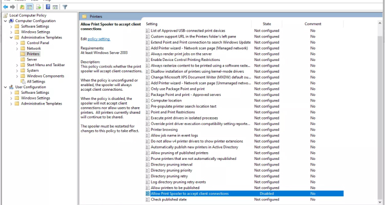

Na última terça-feira (10), a Microsoft liberou uma grande atualização voltada para a correção de diversos erros em seu sistema operacional, o Windows. A novidade trata-se de um "Tuesday Patch" (ou "Conserto de Terça-Feira", em português), termo coloquial dado a uma categoria de ajustes rotineiros para um produto ou serviço.
Ao todo, foram 44 falhas corrigidas, sendo 7 delas consideradas críticas e as demais avaliadas como importantes. Dentre elas, há também três vulnerabilidades zero-day, que se referem a erros desconhecidos pelos desenvolvedores no lançamento de um software ou código — permitindo que hackers os utilizem para fins maliciosos.
Possivelmente, uma das correções mais importantes na atualização é voltada para falha no serviço de impressoras do Windows, que possibilitava a execução remota de códigos por cibercriminosos. Desde junho deste ano, quando foi descoberto, o problema tornou-se um grande motivo de preocupação entre os internautas.
Outras Noticias


Pressão dos EUA

Captura de tela relatando a falha no serviço de impressão do Windows.
{kind=link}
A atualização afetou uma série de programas e ferramentas do Windows, incluindo:
.NET Core e Visual Studio
ASP.NET Core e Visual Studio
Azure
Windows Update
Componentes do Serviço de Impressão do Windows
Windows Media
Windows Defender
Cliente de Área de Trabalho Remota
Microsoft Dynamics
Microsoft Edge (apenas o baseado em Chromium)
Microsoft Office
Microsoft Office Word
Microsoft Office SharePoint
As correções chegarão para versões do Windows 7, Windows 8/8.1 e Windows 10; confira a lista completa de mudanças no site da Microsoft.
Veja Também Reviwes